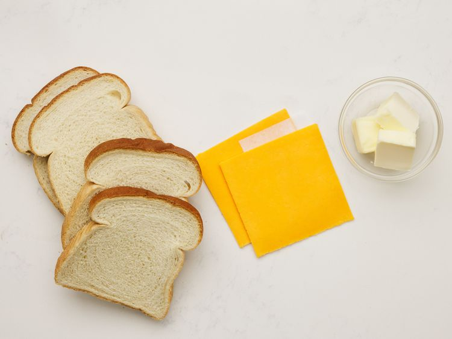
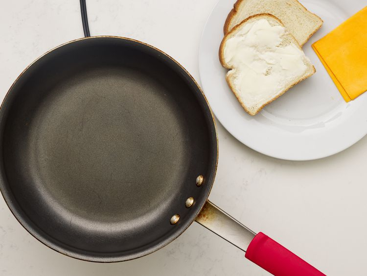
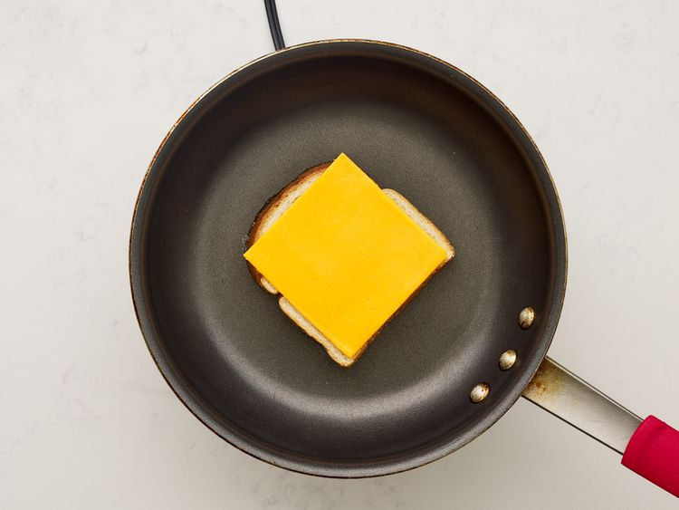

Home
Grilled Cheese Sandwich

Everyone needs to know how to make a classic grilled cheese sandwich. Whether you're a beginner cook or an old pro, you'll come back to this top-rated grilled cheese recipe again and again!
How to Make Grilled Cheese
You'll find a detailed ingredient list and step-by-step instructions in the recipe below, but let's go over the basics:
Grilled Cheese Ingredients
- 4 Slices White Bread
- 2 Slices Cheese
- 3 Tablespoons Butter, divided
- Mayonnaise (Optional)
Directions
- Gather all ingredients

- Preheat a nonstick skillet over medium heat. Generously butter one side of a slice of bread

- Place bread butter-side down in the hot skillet; add 1 slice of cheese

- Butter a second slice of bread on one side and place butter-side up on top of cheese.

- Cook until lightly browned on one side; filp over and continue cooking until cheese is melted

- Repeat with remaing 2 slices of bread, butter, and slice of cheese. Serve and enjoy!